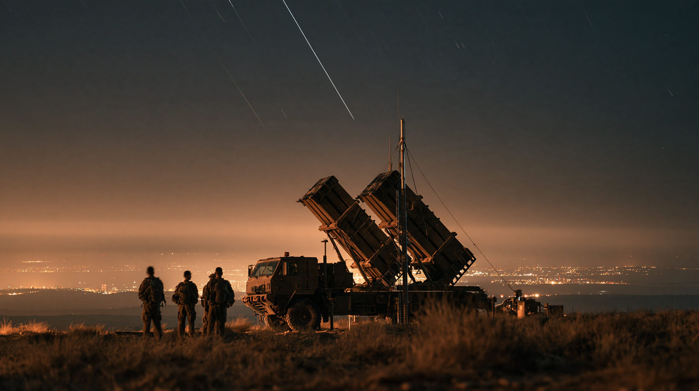
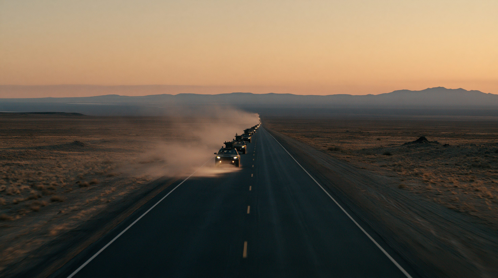

01論点 — 発動はされたが、中身は見えない
2026年8月7日、イスラム教の聖地メッカで、サウジアラビアのムハンマド・ビン・サルマン皇太子、トルコのエルドアン大統領、パキスタンのシャバズ・シャリフ首相が「メッカ共同防衛協定」に署名した。中核となる条項は「3か国のいずれかへの武力攻撃は、全員への攻撃とみなす」というもので、北大西洋条約機構（NATO）第5条をモデルにしたとされる。前身は2025年9月17日に結ばれたサウジアラビア・パキスタン戦略的相互防衛協定で、そこにトルコが加わる形で今回の協定が成立した。
3か国の組み合わせは異色である。世界最大級の石油輸出国であるサウジアラビア、兵員数ではNATO加盟国のなかでアメリカに次ぐ規模の軍を持つトルコ、そしてイスラム圏で唯一の核保有国であるパキスタン。資金・通常戦力・核という3つの異なる力が、ひとつの協定で結びついた。
一方で、協定には欠けているものが多い。条文そのものが公開されておらず、共同司令部・常設部隊は存在せず、発動の手順も公表されていない。トルコでは議会の批准も終わっていない。それでも10月5日、3か国は協定を初めて発動し、トルコとパキスタンが部隊をサウジアラビアに展開することで合意した。ただし派遣する部隊の規模や任務は公表されていない。さらに3か国が念頭に置く脅威もそれぞれ異なる。サウジアラビアはイランとフーシ派、パキスタンはインド、トルコはイスラエルとクルド勢力である。
この同盟は、誰を何から守るために結ばれたのか。そして実際に守れるのか。
02タイムライン — 協力の系譜から初の発動まで
サウジアラビアとパキスタンの軍事協力は60年以上前にさかのぼる。そこにイラン戦争という直近の危機が重なり、今回の3か国協定に至った経緯と、署名から初の発動までを追う。
両国の防衛関係は、今回の協定より半世紀以上前から続いている。
サウジアラビア主導によるイエメン内戦への軍事介入が始まった際、パキスタンは参加を要請されたが見送った。
パレスチナのイスラム組織ハマスによる攻撃とその後の戦闘を受け、サウジアラビア・トルコ・パキスタンの間で防衛協力に関する協議が始まったと報じられている。
「どちらかへの侵略は両国への侵略とみなす」との条項を含む協定に署名。核兵器の扱いは明記されなかった。パキスタンのアシフ国防相は核の傘の提供を示唆する発言をしたが、その後、本人が「核は議題にない」と発言を修正した。
アメリカはサウジアラビアをNATO非加盟の主要同盟国に指定し、F-35戦闘機の売却にも道を開いた。
イランは報復として湾岸各地を攻撃し、3月2日にはサウジアラビアのラス・タヌラ製油所がドローン攻撃を受けた。
パキスタンの仲介で4月8日にアメリカとイランの停戦が成立した。同月、パキスタンは中国と共同開発したJF-17戦闘機を中心とする約16機の部隊をサウジアラビアに派遣。兵員約8,000人と中国製防空システムHQ-9もあわせて展開したと報じられている（2026年5月）。
トランプ大統領は停戦が終わったと表明した。
サウジアラビア・トルコ・パキスタンの首脳が署名。中核条項は「3か国のいずれかへの武力攻撃は、全員への攻撃とみなす」。
自身のSNS「トゥルース・ソーシャル」で「大きく大胆で重要な第一歩」と書き込んだ。
3か国の外相・国防相・軍参謀長が出席した戦略・政治・防衛委員会の初会合で、同盟の名称を「メッカ防衛同盟」とし、常設事務局をリヤドに設置、初代事務局長はパキスタンから出すことで合意した。
フーシ派のミサイル攻撃でサウジアラビア南部の73人が負傷したと報じられるなか、アシフ国防相は「イエメンの事態がサウジアラビアに波及すれば、メッカ協定は確実に発動する」と述べた。
フーシ派がサウジアラビアの東西パイプラインなどを攻撃した。トルコとパキスタンは非難声明を出したが、軍事行動はとらなかった。トルコの高官は「協定の義務はまだ法的に有効ではない」「体制づくりには数年かかりうる」と述べた（9月14日報道）。
サウジアラビアは、メッカ方面に向かったフーシ派のドローンを15日夜に迎撃したと発表した（フーシ派は関与を否定）。パキスタンのアシフ国防相は「メッカ協定は我々に適用される。義務は果たす」と述べたが、トルコは公式な反応を控え、批准前であることを障害に挙げた。
アメリカ国務省はF-35戦闘機48機、243億ドル相当の売却を承認し、議会に通知した。
パキスタン外務省は、同国のナウマン・マフムード退役中将が、リヤドに置かれる常設事務局の初代事務局長（任期3年）に任命されたと発表した。
サウジアラビア主導の連合軍は、タイフやヤンブーに向けて発射された弾道ミサイル6発を迎撃したと発表した。ヤンブーでは、協定の加盟国ではないギリシャの部隊が運用するパトリオットも迎撃にあたった。同日、国連総会に合わせてニューヨークで3か国の外相が協議し、協定にもとづく支援を検討する軍参謀長の緊急会合を決めた。
サウジアラビアの呼びかけで、パキスタンのムニール元帥、トルコのバイラクタロール参謀総長、サウジアラビアのルワイリ参謀総長が会合した。共同声明は情報協力・軍事調整・戦力の統合を挙げ、協定の約束を実効的な軍事協力として直ちに実行に移し始めると表明した。ただし共同司令部の設置や派兵は発表されなかった。
メディナの預言者のモスクに電力を送る変電所がドローン攻撃を受け、変圧器1基が止まった。サウジアラビア主導の連合軍は10月1日、フーシ派による攻撃だと発表した（フーシ派は否定）。多くの国や国際機関が攻撃を非難した。
3か国の外相・国防相・軍参謀長がリヤドに集まり、メッカとメディナを標的にした攻撃を受けて、「集団的な抑止措置」の発動を決めた。共同声明は、合意した部隊と装備をサウジアラビアに速やかに展開するとしたが、フーシ派を名指しはしなかった。署名以来、初めての発動である。

036つの視点 — 誰が何を求めているか
同じ協定を、当事国と関係国はそれぞれ異なる立場から見ている。
当事国以外の反応も分かれている。イランのアラグチ外相は協定を歓迎しイスラム諸国の団結を呼びかけた一方、イラン議会の議員からは「紙の協定では安全は得られない」との声が出ている。エジプトは加盟を検討しているとされるが、加盟すれば親しいギリシャやキプロスなどとの関係を損なうおそれがあり、慎重な姿勢をとっている。協定の発動後、イラン外務省のバガイ報道官は、パキスタンが「イエメンでの戦争のために」部隊を送ることに警告した。
表は横にスクロールできます
| 国・勢力 | 立場 | 主な脅威 | 評価・反応 |
|---|---|---|---|
| サウジアラビア | 推進しつつ対米関係も維持 | イラン、フーシ派 | F-35売却など対米関係は協定後も深化 |
| パキスタン | 積極推進 | インド | 偵察など支援的な役割をすでに担うと表明、イエメンにも武器を供与 |
| トルコ | 推進、国内手続きは未了 | イスラエル、クルド勢力 | 発動に参加したが、議会の批准は未了 |
| アメリカ | 歓迎、当事者ではない | （地域秩序の変化そのもの） | F-35売却など二国間関係は協定後も継続 |
| イスラエル | 非公式に警戒 | （協定そのものを懸念対象と見る） | 「同盟ではなく連携」との見方も |
| インド | 懸念を表明 | パキスタン | 実効性に疑問を呈しつつ、表立った反対はせず |
評価・反応は、署名以降の報道にもとづく（2026年10月7日時点）。
04データ — 数字で見る3か国の実力
協定を支える3か国の実力を、軍事費・核戦力・経済負担の3つの指標で見る。
軍事費（2025年、億ドル）
サウジアラビア・トルコ・パキスタンの合計は1,251億ドルで、グラフの6か国のなかで最も多いインドを上回る。ただしその約3分の2（66.5%）はサウジアラビア1国の支出である。比較のため関連国も添えた。サウジアラビアはSIPRIの推定値。金額は名目値で、世界全体の軍事費は2兆8,870億ドル、アメリカは9,540億ドル。
出典：ストックホルム国際平和研究所（SIPRI）Fact Sheet April 2026, Table 1
核弾頭の保有数（2026年1月時点）
数値はSIPRIの推計。サウジアラビア・トルコ・イランは核兵器を保有していない。2025年のサウジアラビア・パキスタン協定について、ベルファーセンターは公開された文言に核への言及はなく、核の傘にはあたらないと分析している。メッカ協定の条文は公開されていない。
出典：SIPRI Yearbook 2026 Summary「World nuclear forces, January 2026」
軍事費の対GDP比（2025年、%）
イランの軍事費は実質額で2年連続の減少だが、ストックホルム国際平和研究所（SIPRI）はインフレ率42%の影響と、ドローン・ミサイル計画の一部が予算外で賄われている点を指摘している。サウジアラビアは推定値。
出典：SIPRI Fact Sheet April 2026, Table 1
05深掘り — 発動された同盟の、次の試練
※ ここから先は、ここまでの事実にもとづく筆者個人の見解です。
協定は署名から2か月で、紙の上の約束から実際の決定へと進んだ。一方でサウジアラビアは、アメリカからF-35を買う手続きも同時に進めている。アメリカとの関係を切らずに頼れる相手を増やすという動きは、今後も続くだろう。協定が本当に試されるのは、部隊の規模と任務が明らかになり、イエメンでの作戦に加わるかどうかの判断を迫られたときである。
